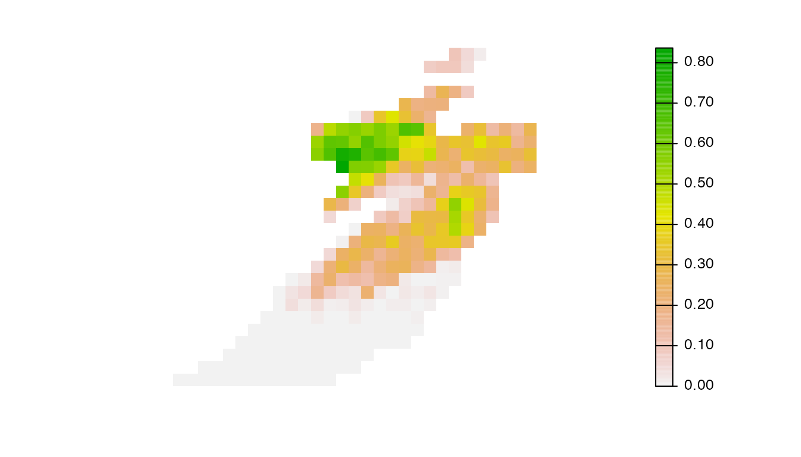
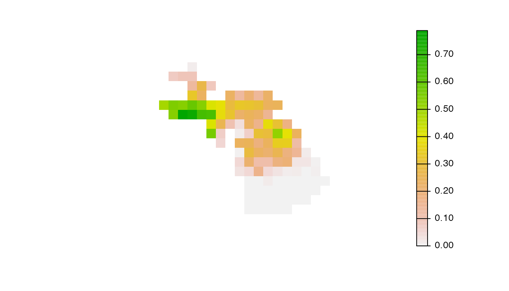
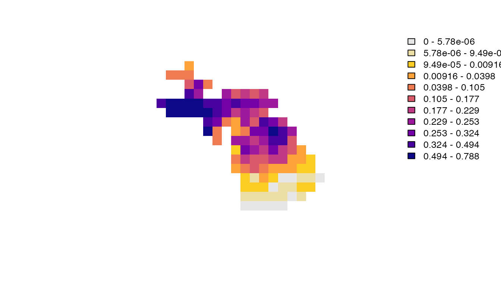
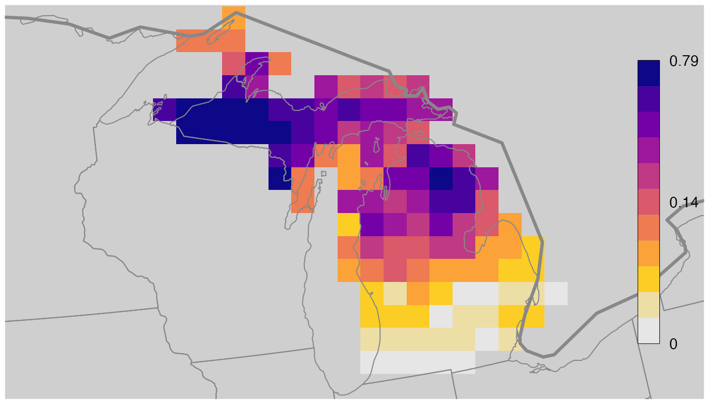

Working with Raster Data
Matt Strimas-Mackey, Tom Auer, Daniel Fink
2022-06-29
Source:vignettes/rasters.Rmd
rasters.RmdLoading raster data
As covered in the Get
Started vignette, the function load_raster() loads
raster data products in R as RasterStack objects, which we
can work with using the raster package. Let’s start by
loading the seasonal relative abundance raster for the example
Yellow-bellied Sapsucker data. We’ll work with the low resolution data
in this vignette to ensure fast processing times.
library(ebirdst)
library(raster)
library(sf)
library(exactextractr)
library(dplyr)
library(tidyr)
library(rnaturalearth)
library(ggplot2)
extract <- raster::extract
# download the example yellow-bellied sapsucker data
# this simplified dataset doesn't require an access key
path <- ebirdst_download("example_data")
# alternatively, you can use the following to get the data path
# if the data package has already been downloaded
path <- get_species_path("example_data")
# load seasonal mean relative abundance at low res
abd_seasonal <- load_raster(path,
product = "abundance",
period = "seasonal",
metric = "mean",
resolution = "lr")
# get the seasons corresponding to each layer
names(abd_seasonal)
#> [1] "breeding" "nonbreeding" "prebreeding_migration"
#> [4] "postbreeding_migration"
# extract just the breeding season relative abundance
abd_breeding <- abd_seasonal[["breeding"]]We can get the dates and quality scores associated with each of these
seasons by filtering the ebirdst_runs data frame.
ebirdst_runs %>%
# note that the example data are for yellow-bellied sapsucker
filter(common_name == "Yellow-bellied Sapsucker") %>%
glimpse()
#> Rows: 1
#> Columns: 23
#> $ species_code <chr> "yebsap"
#> $ scientific_name <chr> "Sphyrapicus varius"
#> $ common_name <chr> "Yellow-bellied Sapsucker"
#> $ resident <lgl> FALSE
#> $ breeding_quality <dbl> 3
#> $ breeding_range_modeled <lgl> TRUE
#> $ breeding_start <date> 2020-05-24
#> $ breeding_end <date> 2020-08-17
#> $ nonbreeding_quality <dbl> 3
#> $ nonbreeding_range_modeled <lgl> TRUE
#> $ nonbreeding_start <date> 2020-11-23
#> $ nonbreeding_end <date> 2020-03-08
#> $ postbreeding_migration_quality <dbl> 3
#> $ postbreeding_migration_range_modeled <lgl> TRUE
#> $ postbreeding_migration_start <date> 2020-08-24
#> $ postbreeding_migration_end <date> 2020-11-16
#> $ prebreeding_migration_quality <dbl> 3
#> $ prebreeding_migration_range_modeled <lgl> TRUE
#> $ prebreeding_migration_start <date> 2020-03-15
#> $ prebreeding_migration_end <date> 2020-05-17
#> $ resident_quality <dbl> 3
#> $ resident_start <date> NA
#> $ resident_end <date> NAMapping relative abundance
In this section, we’ll demonstrate how to make a simple map of breeding season relative abundance. However, note that to make high-quality, publication-ready maps typically requires extra work. It many cases, it may be worthwhile designing maps in a traditional GIS environment such as QGIS or ArcGIS.
The simplest way to map the seasonal relative abundance data is to
use the built in plot() function from the
raster package.
plot(abd_breeding, axes = FALSE)
Clearly this approach doesn’t work out of the box! There are a wide variety of issues that we’ll tackle one at a time.
Extent
All raster data downloaded through this package are defined over the
same global grid, regardless of the range of the individual species. The
example data only has non-zero abundance within the state of Michigan,
which is barely visible on the above global map. We need to define an
extent for our map. There are a variety of ways to do this, but we’ll
use the R package rnaturalearth to access a polygon
boundary for Michigan, which we’ll then use to crop the raster.
# boundary polygon for michigan
mi <- ne_states(iso_a2 = "US", returnclass = "sf") %>%
filter(postal == "MI") %>%
# project to same coordinate reference system as the raster data
st_transform(st_crs(abd_seasonal))
# crop data to michigan
abd_breeding_mi <- crop(abd_breeding, mi)
# map the cropped data
plot(abd_breeding_mi, axes = FALSE)
Projection
The raster data are all provided in the same equal area sinusoidal
projection as NASA MODIS data. While this projection is suitable for
analysis, it is not ideal for mapping since it introduces significant
distortion. Instead, as part of the Status and Trends workflow, custom
species-specific projections are provided that are optimized for the
region that the species occurs within. We can access the projection for
Yellow-bellied Sapsucker with load_fac_map_parameters(),
then transform the raster data to this custom projection.
# load the mapping parameters
fac_parameters <- load_fac_map_parameters(path)
crs <- fac_parameters$custom_projection
# transform to the custom projection using nearest neighbor resampling
abd_projected <- projectRaster(abd_breeding_mi, crs = crs, method = "ngb")
# map the cropped and projected data
plot(abd_projected, axes = FALSE)
Abundance bins
The relative abundance data are not uniformly distributed, which can
lead to challenges distinguishing areas of differing levels of
abundance. To address this, we’ll use a quantile bins for the map, where
each color in the legend corresponds to an equal number of cells in the
raster. We’ll define these bins excluding zeros, then assign a seperate
color to the zeros. We can also use the function
abundance_palette() to get the same set of colors we use in
the legends on the eBird Status and Trends website.
# quantiles of non-zero values
v <- values(abd_projected)
v <- v[!is.na(v) & v > 0]
bins <- quantile(v, seq(0, 1, by = 0.1))
# add a bin for 0
bins <- c(0, bins)
# status and trends palette
pal <- abundance_palette(length(bins) - 1)
# add a color for zero
pal <- c("#e6e6e6", pal)
# map using the quantile bins
plot(abd_projected, breaks = bins, col = pal, axes = FALSE)
Basemap
Finally, we’ll add state and country boundaries to provide some
context. The R package rnaturalearth is an excellent source
of attribution free contextual GIS data.
# natural earth boundaries
countries <- ne_countries(returnclass = "sf") %>%
st_geometry() %>%
st_transform(crs)
states <- ne_states(iso_a2 = "US", returnclass = "sf") %>%
st_geometry() %>%
st_transform(crs)
# define the map extent with the michigan polygon
mi_ext <- mi %>%
st_geometry() %>%
st_transform(crs)
plot(mi_ext)
# add basemap
plot(countries, col = "#cfcfcf", border = "#888888", add = TRUE)
# add data
plot(abd_projected,
breaks = bins, col = pal,
axes = FALSE, legend = FALSE, add = TRUE)
# add boundaries
plot(countries, col = NA, border = "#888888", add = TRUE)
plot(states, col = NA, border = "#888888", add = TRUE)
# add legend
# label the bottom, middle, and top
labels <- quantile(bins, c(0, 0.5, 1))
plot(abd_projected, zlim = c(0, 1), legend.only = TRUE,
col = pal, breaks = seq(0, 1, length.out = length(bins)),
legend.shrink = 0.9, legend.width = 2,
axis.args = list(at = seq(0, 1, length.out = length(labels)),
labels = signif(labels, 3),
col.axis = "black", fg = NA,
cex.axis = 0.9, lwd.ticks = 0,
line = -0.5))
Extracting trajectories with uncertainty {$trajectories}
Next, we’ll look at the temporal component of the relative abundance data. Using the weekly relative abundance cubes, we can chart the change in relative abundance throughout the year for a fixed location. Furthermore, using the upper and lower confidence interval rasters, we can add uncertainty estimates. We often refer to these as relative abundance trajectories.
Let’s start by loading all the necessary relative abundance cubes.
abd_median <- load_raster(path, product = "abundance",
metric = "median", resolution = "lr")
abd_lower <- load_raster(path, product = "abundance",
metric = "lower", resolution = "lr")
abd_upper <- load_raster(path, product = "abundance",
metric = "upper", resolution = "lr")Now we’ll extract the values for a fixed location.
# set a point
pt <- st_point(c(-88.1, 46.7)) %>%
st_sfc(crs = 4326) %>%
st_transform(crs = st_crs(abd_median)) %>%
st_coordinates()
# extract
traj_median <- extract(abd_median, pt, fun = mean, na.rm = TRUE)[1, ]
traj_upper <- extract(abd_upper, pt, fun = mean, na.rm = TRUE)[1, ]
traj_lower <- extract(abd_lower, pt, fun = mean, na.rm = TRUE)[1, ]
# plot trajectories
plot_frame <- data.frame(x = 1:length(traj_median),
y = unname(traj_median),
lower = unname(traj_lower),
upper = unname(traj_upper))
ggplot(plot_frame, aes(x, y)) +
geom_line(data = plot_frame) +
geom_ribbon(data = plot_frame,
aes(ymin = lower, ymax = upper),
alpha = 0.3) +
ylab("Relative abundance") +
xlab("Week") +
theme_light()Regional statistics
In addition to maps and visualizations, the eBird Status and Trends website provides a set of statistics summarizing the spatial data over regions (countries and states) and seasons. The five regional statistics are:
- Mean relative abundance: the average estimated relative abundance within the given region.
- Percentage of seasonal population: the sum of the estimated relative abundance within the selected region divided by the sum of the estimated relative abundance across the full range.
- Percentage of region occupied: the percentage of the selected region within the range boundary of a species.
- Percentage of range in region: the fraction of a species’ total range that falls within the selected region.
- Days of occupation in region: the number of days that a species occupies the selected region, with occupation being defined as spatially covering the selected region by at least 5% based on estimated relative abundances averaged across the given season.
These statistics can be downloaded from the Status and Trends website for all regions and seasons for any given species; however, there may be situations where you want to calculate them over different regions than those provided. With that in mind, in this section we’ll cover how to calculate a couple of these statistics: percent of population in region and percent of region occupied. The remaining 3 statistics can be calculated following the same approach with some modifications.
Since the example data used in this vignette is restricted to Michigan, we’ll calculate the statistics over the counties in Michigan; however, this approach can easily be extended to any set of regions. Let’s start by downloading county boundaries for Michigan.
mi_counties <- getData("GADM", country = "USA", level = 2, path = tempdir()) %>%
st_as_sf() %>%
filter(NAME_1 == "Michigan") %>%
select(county = NAME_2, county_code = HASC_2) %>%
# remove lakes which aren't true counties
filter(county_code != "US.MI.WB")
# project to sinusoidal
mi_counties_proj <- st_transform(mi_counties, crs = projection(abd_median))We’ll need the seasonal percent of population cubes and the seasonal ranges for these calculations.
pop_seasonal <- load_raster(path, product = "percent-population",
period = "seasonal", resolution = "lr")
ranges <- load_ranges(path, resolution = "lr", smoothed = FALSE)Percent of Population
Percent of population in regions is one of the simplest statistics to calculate since a raster of percent of population is already provided; we simply sum all the raster cells within each region polygon.
pctpop <- exact_extract(pop_seasonal, mi_counties_proj, fun = "sum") %>%
# attach county attributes
mutate(county_code = mi_counties$county_code) %>%
# transpose to long format, one season per row
pivot_longer(cols = -county_code,
names_to = "season", names_prefix = "sum.",
values_to = "percent_population")
#>
|
| | 0%
|
|= | 1%
|
|== | 2%
|
|=== | 4%
|
|=== | 5%
|
|==== | 6%
|
|===== | 7%
|
|====== | 8%
|
|======= | 10%
|
|======== | 11%
|
|======== | 12%
|
|========= | 13%
|
|========== | 14%
|
|=========== | 16%
|
|============ | 17%
|
|============= | 18%
|
|============= | 19%
|
|============== | 20%
|
|=============== | 22%
|
|================ | 23%
|
|================= | 24%
|
|================== | 25%
|
|=================== | 27%
|
|=================== | 28%
|
|==================== | 29%
|
|===================== | 30%
|
|====================== | 31%
|
|======================= | 33%
|
|======================== | 34%
|
|======================== | 35%
|
|========================= | 36%
|
|========================== | 37%
|
|=========================== | 39%
|
|============================ | 40%
|
|============================= | 41%
|
|============================== | 42%
|
|============================== | 43%
|
|=============================== | 45%
|
|================================ | 46%
|
|================================= | 47%
|
|================================== | 48%
|
|=================================== | 49%
|
|=================================== | 51%
|
|==================================== | 52%
|
|===================================== | 53%
|
|====================================== | 54%
|
|======================================= | 55%
|
|======================================== | 57%
|
|======================================== | 58%
|
|========================================= | 59%
|
|========================================== | 60%
|
|=========================================== | 61%
|
|============================================ | 63%
|
|============================================= | 64%
|
|============================================== | 65%
|
|============================================== | 66%
|
|=============================================== | 67%
|
|================================================ | 69%
|
|================================================= | 70%
|
|================================================== | 71%
|
|=================================================== | 72%
|
|=================================================== | 73%
|
|==================================================== | 75%
|
|===================================================== | 76%
|
|====================================================== | 77%
|
|======================================================= | 78%
|
|======================================================== | 80%
|
|========================================================= | 81%
|
|========================================================= | 82%
|
|========================================================== | 83%
|
|=========================================================== | 84%
|
|============================================================ | 86%
|
|============================================================= | 87%
|
|============================================================== | 88%
|
|============================================================== | 89%
|
|=============================================================== | 90%
|
|================================================================ | 92%
|
|================================================================= | 93%
|
|================================================================== | 94%
|
|=================================================================== | 95%
|
|=================================================================== | 96%
|
|==================================================================== | 98%
|
|===================================================================== | 99%
|
|======================================================================| 100%
head(pctpop)
#>
[38;5;246m# A tibble: 6 × 3
[39m
#> county_code season percent_population
#>
[3m
[38;5;246m<chr>
[39m
[23m
[3m
[38;5;246m<chr>
[39m
[23m
[3m
[38;5;246m<dbl>
[39m
[23m
#>
[38;5;250m1
[39m US.MI.AC breeding 0.000
[4m7
[24m
[4m8
[24m
[4m9
[24m
#>
[38;5;250m2
[39m US.MI.AC nonbreeding 0
#>
[38;5;250m3
[39m US.MI.AC prebreeding_migration 0.000
[4m6
[24m
[4m4
[24m
[4m1
[24m
#>
[38;5;250m4
[39m US.MI.AC postbreeding_migration 0.000
[4m6
[24m
[4m2
[24m
[4m1
[24m
#>
[38;5;250m5
[39m US.MI.AG breeding 0.001
[4m0
[24m
[4m1
[24m
#>
[38;5;250m6
[39m US.MI.AG nonbreeding 0Let’s make a quick map comparing the breeding and non-breeding percent of population within counties in Michigan.
# join back to county boundaries
pctpop_proj <- pctpop %>%
filter(season %in% c("breeding", "nonbreeding")) %>%
inner_join(mi_counties, ., by = "county_code") %>%
# transform to custom projection for plotting
st_transform(crs = crs)
# plot
ggplot(pctpop_proj) +
geom_sf(aes(fill = percent_population)) +
scale_fill_viridis_c(trans = "sqrt") +
guides(fill = guide_colorbar(title.position = "top", barwidth = 15)) +
facet_wrap(~ season, ncol = 2) +
labs(title = "Seasonal percent of population in MI counties",
fill = "Percent of population") +
theme_bw() +
theme(legend.position = "bottom")
Percent of region occupied
To calculate range-based stats it’s often easiest to use the range polygons rather than the raster data. We can calculate the area of each county, then calculate the area of intersection between the counties and the ranges, and finally divide the two to get the percent of each region occupied.
# add the area of each region
mi_counties$area <- st_area(mi_counties)
# for each season, intersect with the county boundaries and calculate area
range_pct_occupied <- NULL
for (s in ranges$season) {
range_pct_occupied <- ranges %>%
filter(season == s) %>%
st_intersection(mi_counties, .) %>%
mutate(percent_occupied = as.numeric(st_area(.) / area)) %>%
select(season, county_code, percent_occupied) %>%
st_drop_geometry() %>%
bind_rows(range_pct_occupied, .)
}